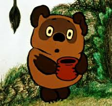

Псевдокласс :only-of-type
Псевдокласс :only-of-type применяется к дочернему элементу указанного типа, только если он единственный у родителя.
Пример:
<style>
img:only-of-type {
border: 10px solid red;
}
img{
width: 100px;
height: 100px;
}
</style>

Псевдокласс :first-of-type
Псевдокласс :first-of-type применяет заданный стиль к элементу, который является первым дочерним элементом определенного типа внутри родительского элемента. Отличие псевдокласса :first-of-type от :first-child заключается в том, что он выбирает первый дочерний элемент определенного типа, а не первый дочерний элемент этого типа.
Пример:
<style>
span:first-of-type {
color: blue;
}
h4:first-of-type {
color: green;
}
</style>
Uno
Один
Dos
Два
Tres
Три